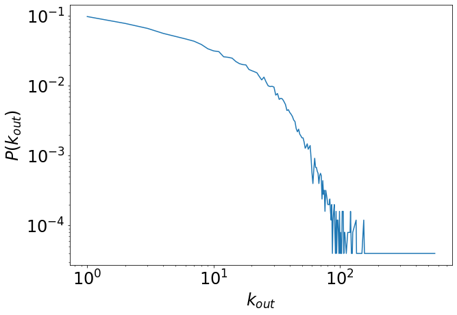

2. Basic network import and representation¶
Here, we play a bit with some network datasets.
We analyze the dataset ‘cit-HepTh’ available from the SNAP repository: http://snap.stanford.edu/data/index.html
There are several other repositories of network datasets, for instance:
import sys, math
%pylab inline
Populating the interactive namespace from numpy and matplotlib
import collections as col
We use a dictionary that associates a key (node) to a list of nodes (neighbours)
links_out=col.defaultdict(list)
print(links_out)
defaultdict(<class 'list'>, {})
We open the file containing the network and read each line
filepath='./../network_data/cit-HepTh.txt'
fh=open(filepath,'r')
fh
<_io.TextIOWrapper name='./../network_data/cit-HepTh.txt' mode='r' encoding='UTF-8'>
s=fh.readlines()
s[:4]
['# Directed graph (each unordered pair of nodes is saved once): Cit-HepTh.txt \n',
'# Paper citation network of Arxiv High Energy Physics Theory category\n',
'# Nodes: 27770 Edges: 352807\n',
'# FromNodeId\tToNodeId\n']
s[10].strip().split()
['1001', '9407087']
for line in s:
#remove "\n" characters (.strip()) and split the line at blank spaces (split.())
t=line.strip().split()
if t[0]!='#':
#the first lines are comments
origin=int(t[0])
dest=int(t[1])
links_out[origin].append(dest)
#close the file
fh.close()
len(links_out[1001])
83
How many nodes are in the network?
tot_nodes=len(links_out)
print(tot_nodes)
25059
We calculate the out-degree distribution of the network.
degree={}
for i in links_out:
deg=len(links_out[i])
if deg in degree:
degree[deg]+=1
else:
degree[deg]=1
print(sorted(degree.keys()))
[1, 2, 3, 4, 5, 6, 7, 8, 9, 10, 11, 12, 13, 14, 15, 16, 17, 18, 19, 20, 21, 22, 23, 24, 25, 26, 27, 28, 29, 30, 31, 32, 33, 34, 35, 36, 37, 38, 39, 40, 41, 42, 43, 44, 45, 46, 47, 48, 49, 50, 51, 52, 53, 54, 55, 56, 57, 58, 59, 60, 61, 62, 63, 64, 65, 66, 67, 68, 69, 70, 71, 72, 73, 74, 75, 76, 77, 78, 79, 80, 81, 82, 83, 84, 85, 86, 87, 88, 89, 90, 91, 92, 93, 94, 95, 96, 97, 98, 99, 100, 101, 102, 103, 104, 106, 107, 108, 109, 112, 115, 120, 121, 122, 123, 124, 125, 126, 134, 135, 136, 139, 142, 143, 146, 149, 154, 156, 157, 158, 159, 160, 165, 167, 169, 170, 175, 177, 180, 181, 198, 200, 201, 207, 211, 212, 214, 216, 226, 246, 263, 274, 289, 302, 359, 562]
degree
{83: 6,
1: 2449,
7: 1087,
4: 1405,
2: 1951,
40: 104,
9: 847,
27: 250,
10: 790,
14: 622,
21: 398,
25: 333,
17: 503,
15: 556,
19: 429,
16: 519,
29: 246,
53: 32,
28: 244,
22: 384,
37: 135,
39: 114,
35: 162,
20: 412,
26: 284,
32: 194,
23: 339,
6: 1172,
11: 771,
30: 240,
41: 98,
65: 17,
24: 304,
31: 184,
34: 166,
56: 31,
18: 498,
13: 640,
58: 35,
36: 149,
8: 975,
42: 91,
47: 60,
52: 39,
38: 111,
5: 1272,
3: 1657,
72: 6,
121: 4,
54: 34,
75: 8,
12: 651,
55: 37,
84: 4,
59: 23,
33: 160,
51: 45,
46: 55,
63: 23,
44: 77,
50: 45,
73: 11,
71: 13,
74: 7,
45: 61,
165: 1,
126: 2,
214: 1,
562: 1,
68: 10,
64: 17,
48: 51,
57: 33,
134: 3,
49: 48,
216: 1,
154: 3,
61: 10,
159: 1,
85: 3,
359: 1,
43: 81,
78: 7,
60: 14,
62: 16,
66: 15,
157: 1,
67: 14,
98: 1,
70: 14,
115: 2,
104: 4,
86: 5,
207: 1,
99: 4,
109: 2,
81: 5,
123: 1,
97: 2,
100: 1,
167: 1,
91: 2,
201: 1,
69: 13,
125: 1,
77: 8,
89: 4,
79: 6,
87: 1,
90: 5,
82: 5,
106: 4,
263: 1,
143: 1,
102: 1,
80: 5,
158: 1,
95: 3,
181: 1,
274: 1,
76: 4,
122: 2,
175: 1,
149: 1,
212: 1,
101: 2,
302: 1,
96: 3,
120: 2,
200: 1,
108: 2,
226: 1,
142: 1,
107: 1,
88: 3,
246: 1,
160: 1,
94: 1,
93: 4,
135: 1,
146: 1,
211: 1,
124: 1,
198: 1,
177: 1,
289: 1,
169: 1,
180: 1,
170: 1,
156: 1,
92: 1,
103: 1,
139: 1,
136: 1,
112: 1}
We export the degree distribution to an output file.
s_deg=sorted(degree.keys())
fout=open('./../network_data/Cit-HepTh-degout-distri.dat','w')
for d in s_deg:
deg_freq=float(degree[d])/tot_nodes
fout.write(str(d)+' '+str(deg_freq)+'\n')
fout.close()
for i in degree.items():
print(i)
(83, 6)
(1, 2449)
(7, 1087)
(4, 1405)
(2, 1951)
(40, 104)
(9, 847)
(27, 250)
(10, 790)
(14, 622)
(21, 398)
(25, 333)
(17, 503)
(15, 556)
(19, 429)
(16, 519)
(29, 246)
(53, 32)
(28, 244)
(22, 384)
(37, 135)
(39, 114)
(35, 162)
(20, 412)
(26, 284)
(32, 194)
(23, 339)
(6, 1172)
(11, 771)
(30, 240)
(41, 98)
(65, 17)
(24, 304)
(31, 184)
(34, 166)
(56, 31)
(18, 498)
(13, 640)
(58, 35)
(36, 149)
(8, 975)
(42, 91)
(47, 60)
(52, 39)
(38, 111)
(5, 1272)
(3, 1657)
(72, 6)
(121, 4)
(54, 34)
(75, 8)
(12, 651)
(55, 37)
(84, 4)
(59, 23)
(33, 160)
(51, 45)
(46, 55)
(63, 23)
(44, 77)
(50, 45)
(73, 11)
(71, 13)
(74, 7)
(45, 61)
(165, 1)
(126, 2)
(214, 1)
(562, 1)
(68, 10)
(64, 17)
(48, 51)
(57, 33)
(134, 3)
(49, 48)
(216, 1)
(154, 3)
(61, 10)
(159, 1)
(85, 3)
(359, 1)
(43, 81)
(78, 7)
(60, 14)
(62, 16)
(66, 15)
(157, 1)
(67, 14)
(98, 1)
(70, 14)
(115, 2)
(104, 4)
(86, 5)
(207, 1)
(99, 4)
(109, 2)
(81, 5)
(123, 1)
(97, 2)
(100, 1)
(167, 1)
(91, 2)
(201, 1)
(69, 13)
(125, 1)
(77, 8)
(89, 4)
(79, 6)
(87, 1)
(90, 5)
(82, 5)
(106, 4)
(263, 1)
(143, 1)
(102, 1)
(80, 5)
(158, 1)
(95, 3)
(181, 1)
(274, 1)
(76, 4)
(122, 2)
(175, 1)
(149, 1)
(212, 1)
(101, 2)
(302, 1)
(96, 3)
(120, 2)
(200, 1)
(108, 2)
(226, 1)
(142, 1)
(107, 1)
(88, 3)
(246, 1)
(160, 1)
(94, 1)
(93, 4)
(135, 1)
(146, 1)
(211, 1)
(124, 1)
(198, 1)
(177, 1)
(289, 1)
(169, 1)
(180, 1)
(170, 1)
(156, 1)
(92, 1)
(103, 1)
(139, 1)
(136, 1)
(112, 1)
from operator import itemgetter
x=[]
y=[]
for i in sorted(degree.items(), key=itemgetter(0)):
x.append(i[0])
y.append(float(i[1])/tot_nodes)
plt.figure(figsize=(10,7))
plt.plot(x,y)
plt.xlabel('$k_{out}$', fontsize=24)
plt.ylabel('$P(k_{out})$', fontsize=24)
plt.xticks(fontsize=24)
plt.yticks(fontsize=24)
plt.yscale('log')
plt.xscale('log')

Let’s have a look at the degree-in distribution.
links_in=col.defaultdict(list)
fh=open(filepath,'r')
#reading all the file lines
for line in fh.readlines():
#remove "\n" characters (.strip()) and split the line at blank spaces (split.())
s=line.strip().split()
if s[0]!='#':
#the first lines are comments
origin=int(s[0])
dest=int(s[1])
links_in[dest].append(origin)
#chiudo il file
fh.close()
degree_in=col.defaultdict(int)
for i in links_in.keys():
deg=len(links_in[i])
degree_in[deg]+=1
tot_nodes_in=len(links_in)
print(tot_nodes_in)
23180
What is the difference from an exponential distribution?
def f(t):
return np.exp(-0.5*t)
x=[]
y=[]
for i in sorted(degree_in.items(), key=itemgetter(0)):
x.append(i[0])
y.append(float(i[1])/tot_nodes_in)
plt.figure(figsize=(10,7))
plt.plot(np.array(x),np.array(y))
plt.plot(np.array(x), f(np.array(x)), label='Exponential')
plt.xlabel('$k_{in}$', fontsize=24)
plt.ylabel('$P(k_{in})$', fontsize=24)
plt.xticks(fontsize=24)
plt.yticks(fontsize=24)
plt.yscale('log')
plt.xscale('log')
plt.axis([1,10000,0.00001,1])
plt.legend()
plt.show()